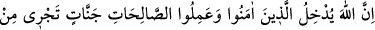
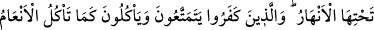
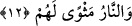
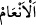
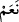
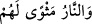
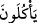

Yine rivâyet olunur ki, Zeyd b. Sabit (r.a.) münafık olduğunu bilmediği biriyle Tâif’e
gitmek üzere Mekke’den yola çıktı. Yolda bir harâbeye girip uyudular. Bu münafık
kalkıp Zeyd’in ellerini bağladı ve onu öldürmek istedi. Zeyd “Ey rahman olan Allahım
bana yardım et” diye duâ etti. Münafık “kahrolasıca öldürme onu” diye bir ses işitti.
Dışarı çıkıp etrafı kolaçan etti, fakat kimseyi göremedi. Bu ses birkaç kere duyuldu.
Üçüncü ikazda atlı biri gelip münafığı öldürdü. Zeyd’in bağını çözüp onu kurtardı ve
“ben Cebrâil’im” dedi. “Sen Allah’a duâ ettiğinde ben yedinci kat semâda idim. Allah
Teâlâ bana: «Yetiş kuluma!» diye emretti dedi. İşte Allah, inananların dostu, sâhibi ve
koruyucusudur.”
Allah Teâlâ Tevrat’ta bu ümmet hakkında şöyle buyurmaktadır: “Bu ümmetin katılmış
olduğu bütün savaşlarda Cebrâil de onlarla beraberdir.” Bu rivâyet delâlet etmektedir
ki sahabe-i kirâmın kâfirlerle yapmış oldukları bütün savaşlarda Cebrâil (a.s.) hazır
bulunmuştur. Hattâ bu ümmetin yapmış olduğu bütün savaşlarda Cebrâil (a.s.) onlarla
beraberdir. Yeter ki ümmet hak ve adâlet üzere olsunlar.
Sonra meleklerin bulunduğu mecliste ve onların katıldığı savaşta tüyler ürperir, gözler
yaşarır ve Yüce Zâta teveccüh hâsıl olur. Bu durum, duânın kabulüne, yardım ve zaferin
husûlüne, diğer her türlü maksad ve isteklerin elde edilmesine vesîle olur. Allah
Teâlâ’dan bizleri yardımına mazhar olan kullarından kılmasını dileriz. Âmin.
12. Allah, inanıp iyi işler yapanları, altlarından ırmaklar akan cennetlere sokar.
İnkâr edenler ise dünyâda biraz yaşarlar, hayvanların yediği gibi yerler, (sonunda)
yerleri ateştir.
“Allah, inanıp iyi işler yapanları, altlarından ırmaklar akan cennetlere sokar.
İnkâr edenler ise dünyâda” dünya metâından az bir zaman faydalanır, “biraz
yaşarlar.” Sonuçlarından habersiz ve haris olarak “hayvanların yediği gibi yerler.”
Nitekim mera ve otlaklarında otlayan hayvanlar, karşı karşıya bulundukları kurban
edilme veya boğazlanma ameliyesinden habersizdirler. O kâfirlerin “(sonunda)
yerleri” sığınak ve ikametleri “ateştir.”
Bu âyet, bir önceki âyette anlatılan Allah Teâlâ’nın müminlere olan velâyetini ve onun
uhrevî semeresini beyân etmektedir. __WORD__ (en’âm), __WORD__ (ne’am) kelimesinin çoğulu olup
deve, sığır, koyun ve keçi demektir.__WORD__ (ve’n-nâru mesvellehüm) cümlesi, ya __WORD__ (ye’külûne) fiilinin vâvından